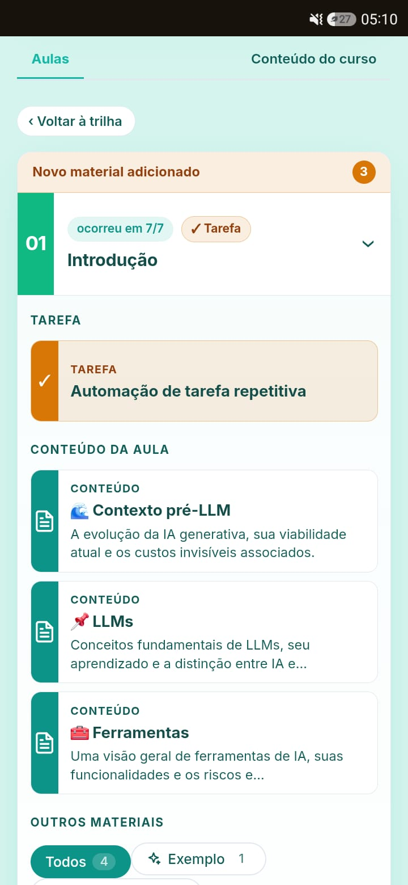
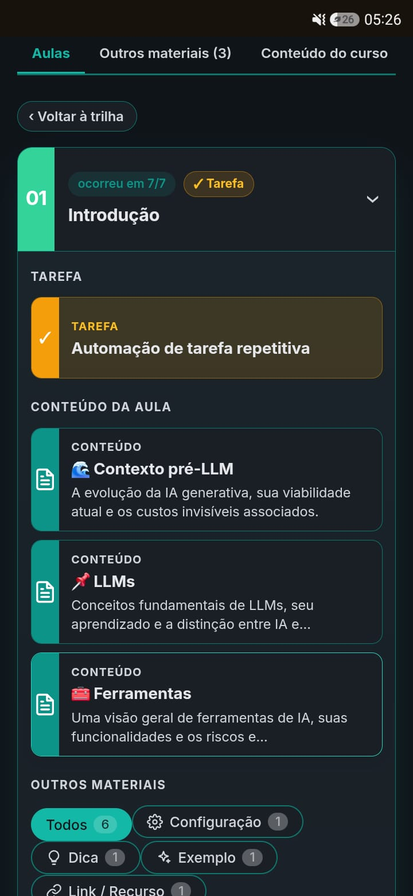

Fundamentos de LLM
Como os modelos pensam, onde acertam e por que erram. Base para usar com confiança, sem fé cega.
Treinamento e consultoria em IA generativa para o Direito. Veja, com a própria mão, a diferença entre fazer “no jeito difícil” e fazer com a PensoIA.
Traduzimos a complexidade da IA em ferramentas práticas, com rigor técnico e segurança jurídica. Cada etapa termina com algo que você leva pra mesa.
Como os modelos pensam, onde acertam e por que erram. Base para usar com confiança, sem fé cega.
Técnicas que transformam um pedido vago em instrução precisa, replicável e auditável.
Alucinações, precedentes falsos, sigilo. Como checar fontes e manter a responsabilidade onde ela deve estar: com você.
ChatGPT, Claude, Gemini, NotebookLM. Mãos na massa até montar seu repertório reutilizável de prompts.
Aprender IA também deveria ser fácil. Por isso o curso vem com ferramentas que mantêm todo mundo junto, em tempo real e como referência permanente.
Perguntas em tempo real, enquetes e um termômetro de compreensão. Ninguém fica para trás em silêncio.
Apostila digital com conteúdo, tarefas e materiais. Tudo o que você praticou continua acessível como consulta.



Onze anos no Judiciário (servidor do TJSE) e dupla formação em Direito e em Análise e Desenvolvimento de Sistemas. Élder conhece a rotina forense e a engenharia por trás dos modelos, e une as duas pontas.
O resultado é um treinamento que fala a língua de quem advoga e julga, sem perder o rigor técnico. A IA entra como facilitadora; a decisão e a responsabilidade continuam humanas.
Formação certificada e consultoria sob medida, pensadas para a realidade de quem trabalha com o Direito.
Prompt engineering e IA generativa, com certificação. Presencial ou híbrido, ~12–16h em encontros de ~4h: aula expositiva + laboratório prático.
Consultoria em IA generativa para automatizar processos jurídicos com segurança, do diagnóstico à implantação.
Otimização de fluxos de trabalho com modelos de linguagem: menos retrabalho, mais previsibilidade no resultado.
Conte qual é o desafio da sua equipe ou tribunal. Desenhamos a formação ou a automação certa para o seu contexto.